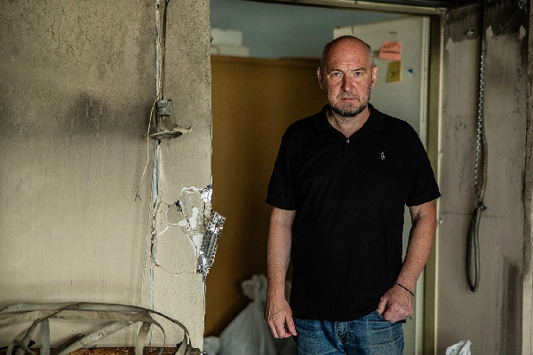
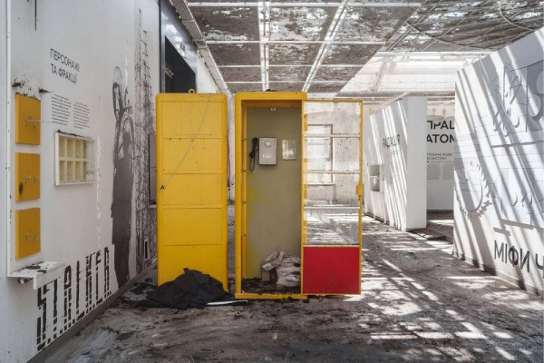
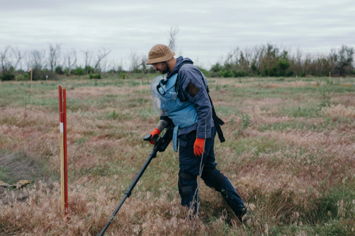
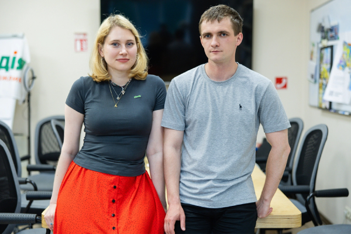
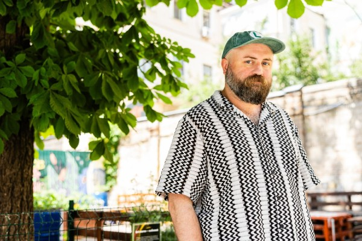
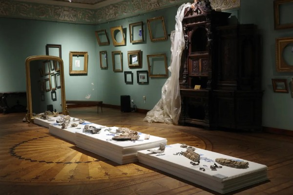
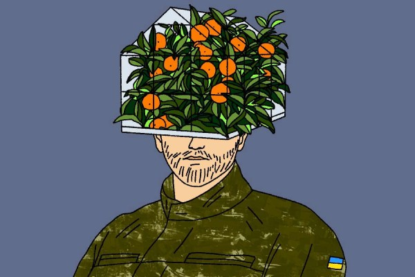

Impact of the War on Different Categories of Ukrainian Scholars
Author(-s): Olena Kozak, Lidia Kuzemska, Yevheniia Polishchuk, Kateryna Chuyeva
Centre of Excellence on Science at Risk, Ukraine

Stories
A Map of Burial Sites Revives the Memory of Lviv’s Forgotten Mathematicians
Read Story
Stories
How is the Institute of Biochemistry recovering from the attack?
Read Story
Stories
We visited the Chornobyl Museum after a Russian strike to see how artifacts and memory are being preserved
Read Story
Stories
How Humanitarian Demining Works in Ukraine
Read Story
Stories
How Ukraine Is Documenting the Environmental Impact of Russian Aggression
Read Story
Stories
How to save museum collections during Russia's full-scale invasion and who does that
Read StoryStories
Reviving the Observatory on Mount Pip Ivan
Read Story
Stories
How the Odesa National Fine Arts Museum survived a Russian attack
Read Story
Stories
What research shows about psychedelics for treating PTSD and depression
Read StoryMark the scientific field that interests you - find and involve Ukrainian scientists in your own projects
To the full database of scientistsPopular requests
Reach a whole community at once - scientific societies bring together the scientists of one field
To all scientific societiesPopular domains
Formalized and organized experience of Ukrainian scientists in the preservation of scientific works, collections and institutions
Show all studiesAuthor(-s): Olena Kozak, Lidia Kuzemska, Yevheniia Polishchuk, Kateryna Chuyeva
Author(-s): Ilona Sviezhentseva, Igor Lyman
Author(-s): Pavel Gol’din, Oleksiy Kolezhuk, Vitaliy Omelyanenko, Anna Vorontsova, Svitlana Tarasenko